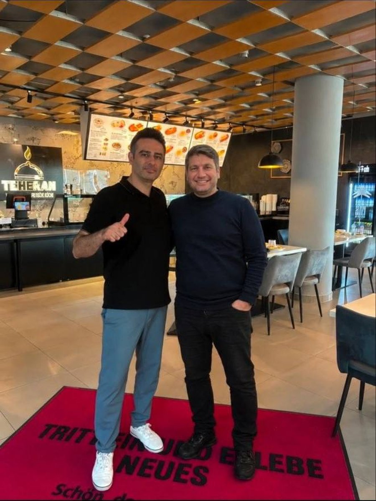

Die Geschichte von Teheran
Teheran ist für uns mehr als nur ein Restaurant. Es ist das Ergebnis einer gemeinsamen Idee, vieler Monate Arbeit und der Entscheidung, etwas Eigenes von Grund auf aufzubauen.
Wir, Meysam Zargari und Mehdi Saberi Dehkordi, haben diesen Weg als Partner mit einem gemeinsamen Ziel begonnen. Wir wollten einen Ort schaffen, an dem wir die authentischen Aromen der persischen Küche und ein Stück iranischer Gastfreundschaft mitten in Koblenz mit anderen Menschen teilen können.
Der Aufbau unseres Restaurants war von Anfang an ein großes und anspruchsvolles Projekt. Da sich unser Restaurant im Foodcourt eines großen Einkaufszentrums befindet, mussten bei der Planung viele besondere Anforderungen berücksichtigt werden. Die Küche, die Geräte und die einzelnen Arbeitsbereiche sollten zu unserer Art des Kochens passen und gleichzeitig alle technischen Vorgaben, Standards und Bedingungen des Standorts erfüllen.
Von den ersten Verträgen und Planungen über den Umbau und die technische Ausstattung bis zur Einrichtung der Küche und der Entwicklung unserer Arbeitsabläufe haben wir jeden Schritt gemeinsam begleitet. Vieles musste neu geplant, angepasst und manchmal auch noch einmal verändert werden. Gerade deshalb steckt heute in fast jedem Teil des Restaurants auch ein Stück unserer persönlichen Geschichte.
Unser Ziel war dabei von Anfang an klar. Wir wollten ein wirklich persisches Restaurant schaffen.
Bei uns sollte persisches Essen nicht nur ein kleiner Teil der Speisekarte sein. Die persische Küche sollte die Identität des gesamten Restaurants bestimmen. Traditionelle Kebabs, persische Schmorgerichte, Reisgerichte, Vorspeisen und viele weitere Spezialitäten gehören deshalb zu unserem Konzept.
Gleichzeitig möchten wir diese traditionelle Küche auf eine moderne und unkomplizierte Art präsentieren. Auch Menschen, die bisher wenig oder gar keine Erfahrung mit persischem Essen haben, sollen die Möglichkeit bekommen, unsere Küche kennenzulernen und zu genießen. Dabei möchten wir das Wichtigste bewahren: den Geschmack, die Qualität und den Charakter der iranischen Küche. Neue Ideen und Konzepte, wie zum Beispiel unser Buffet, gehören ebenfalls zu dieser Entwicklung.
Wenn wir heute auf Teheran - Persische Küche schauen, sehen wir nicht einfach nur ein fertiges Restaurant. Wir erinnern uns an den leeren Raum, die ersten Pläne, den Aufbau der Küche, die Auswahl der Geräte, die Entwicklung unserer Speisekarte und an all die kleinen und großen Entscheidungen, die notwendig waren, bis wir unsere ersten Gäste begrüßen konnten.
Mit der Eröffnung hat unsere eigentliche Reise aber erst begonnen.
Von Anfang an war unser Wunsch, aus Teheran mehr als nur ein einzelnes Restaurant zu machen. Wir möchten eine Marke aufbauen, die für gute persische Küche, Qualität und Gastfreundschaft steht und die durch das Vertrauen unserer Gäste weiter wachsen kann.
Was heute in Koblenz begonnen hat, möchten wir in den kommenden Jahren weiterentwickeln. Vielleicht wird es irgendwann weitere Standorte geben, an denen Menschen den Namen Teheran kennenlernen und unsere Küche genießen können.
Wir wissen, dass wir noch am Anfang dieses Weges stehen. Aber wir wissen auch, was uns bis hierher gebracht hat und worauf wir weiterhin setzen möchten: Arbeit, Ausdauer, Qualität und der Glaube an das, was wir gemeinsam aufgebaut haben.
Meysam & Mehdi
Gründer von Teheran - Persische Küche